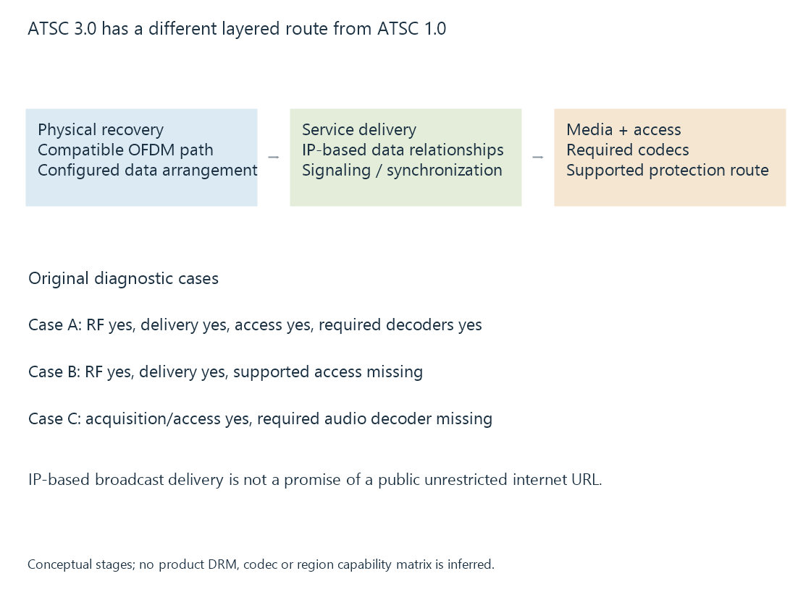

ATSC 3.0 broadcast television
ATSC 3.0 is a layered terrestrial television system using a different physical and delivery architecture from ATSC 1.0, with service coding and protection remaining additional compatibility conditions.
ATSC 3.0 is a layered system designed differently from ATSC 1.0. ATSC describes the suite as largely incompatible with its predecessor, rather than as another video-codec choice for the same receiver.
A working route needs compatible acquisition hardware and implemented service delivery, media and access support.
Physical reception is the first layer
ATSC 3.0 uses an OFDM-based physical arrangement with signaling and configured data paths. The receiver has to recover that system before a television application can handle the delivered service.
A frontend that can demodulate ATSC 1.0’s 8-VSB signal is not automatically an ATSC 3.0 receiver. A media-decoder update does not by itself supply the different RF demodulation.

The broad device model also needs precision: some products can have tuners with different supported capabilities. A “four-tuner” count need not mean four identical ATSC 3.0 acquisition resources.
IP transport is not the same as unrestricted internet access
ATSC 3.0 uses IP-based delivery relationships in its broadcast system. Service signaling identifies how the applicable media components are obtained and synchronized.
That does not turn every broadcast service into an ordinary public website URL. The data can arrive through the RF path, and the receiver/app must implement the relevant service discovery and delivery arrangement.
ATSC A/331 describes those signaling/delivery relationships. Broadcast and broadband components can also participate in a supported service architecture.
The physical, protocol/management and application/presentation layers are organized by the A/300 system specification. Its dated normative references should be read together when describing a particular edition.
Reception, access and decoding form separate conditions
Consider these original diagnostic cases:
| Model case | RF acquisition | Service delivery | Supported access | Media decoding |
|---|---|---|---|---|
| A | Yes | Yes | Yes | Yes |
| B | Yes | Yes | No | Not established |
| C | Yes | Yes | Yes | Required audio decoder unavailable |
Case A satisfies the declared prerequisites. Case B cannot be made playable simply by improving the antenna. Case C can have correctly recovered video data while lacking the needed audio route.
These are teaching conditions, not reports from any tuner or Emby installation.
Protection is another implemented relationship. A/360 defines security and service-protection mechanisms; available source devices, software and approved service paths still determine whether a selected protected service can be supplied.
Encrypted channels develops that distinction without treating a subscription, a tuner lock or a generic media-server interface as interchangeable.
Picture and audio properties belong to the service
The system can support newer media and presentation capabilities, but a station’s actual service can choose a particular resolution, video profile, audio representation and feature set.
An ATSC 3.0 label consequently does not prove that every programme is 4K or HDR. The “4K” in a receiver model likewise does not describe every received channel.
When a service uses Dolby AC-4, the playback path needs the corresponding implemented audio handling. The broadcast label alone is not an audio-decoder capability result.
A network tuner adds another delivery boundary
An ATSC 3.0-capable source can recover a service and expose it to another application through an implemented local interface. That interface needs to supply a representation the receiving server/app can use.
Support demonstrated in the manufacturer’s own app does not automatically establish the same path in every third-party application. This is especially relevant when protection or media preparation belongs to a specific end-to-end arrangement.
See Also
- ATSC 1.0 broadcast television
- Encrypted TV channels and supported playback paths
- HDHomeRun network tuner routes
- MPEG-DASH and its media presentation description
- Dolby AC-4 Audio